해부휴머노이드 해부
답은 부품 효율이다. 열관리는 라디에이터 하나로 끝나지 않고, 아래 네 가지를 동시에 잡는 부품사가 밸류체인 프리미엄을 받는다.
→ 그래서 돈은 감속기·모터·전력반도체·열관리 소재·센서 부품사로 흐른다. "액추에이터사가 곧 열관리 부품사"인 이유다.
사람은 관절만 움직이면 되지만, 로봇은 관절 하나를 움직이려 배터리 → 전력변환 → 인버터 → 모터 → 감속기 → 베어링 → 관절 → 센서 → AI 제어가 동시에 돈다. 여기에 열·충격·진동·마찰·토크·전압·소프트웨어까지 얽혀 하나의 폐루프(Closed Loop)를 이룬다. (G1 Ch.1)
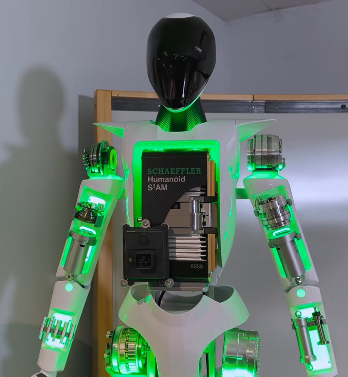
아래 지도에서 OEM을 바꾸면 감속기 유형별 색으로 관절이 표시된다. 열병목 오버레이를 켜면 Optimus Gen3 부위별 열병목 판단표가 겹쳐진다 — 가장 뜨거운 곳은 손이 아니라 전완(팔뚝)에 몰린 손·손목 액추에이터다. 관절/열점을 클릭하면 해당 섹션으로 이동한다.
※ DOF는 로봇마다 집계 기준이 달라 직접 비교에 주의 — Atlas 56은 전신 기준(BD 전기 Atlas, 유압 구형 28→56), Optimus·G1의 22·23은 기본/부분 구성. Optimus 총 DOF는 손 포함 ~50(체 28+손 11/개), G1은 Dex 손 포함 최대 43(기본 23).
액추에이터는 "전기를 움직임으로 바꾸는 장치"지만, 실제로는 모터·감속기·베어링·인코더·드라이버·하우징·냉각이 든 작은 기계 시스템이다. 전기모터는 6,000 rpm 고속·저토크라, 사람 무릎처럼 천천히 큰 힘을 내려면 감속기가 필수다. (G1 Ch.2~3)
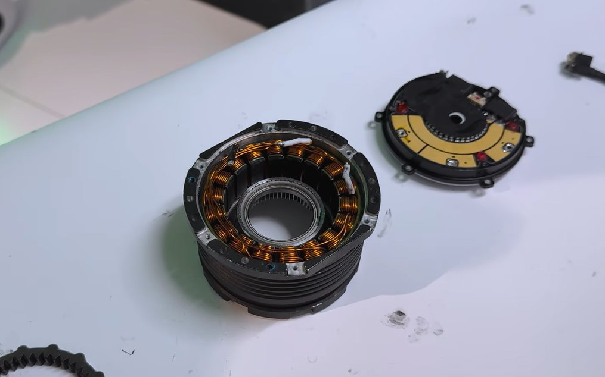
권선의 구리 점적률(Copper Fill Factor)을 높이면 저항이 줄어 열 자체가 덜 난다 — G1 모터 안에는 아직 구리가 더 들어갈 빈 공간이 있어 토크밀도 개선 여지가 남아 있다(Ch.13). "온도↑ → 구리 저항↑ → 손실·열↑"의 악순환을 끊는 가장 근본적 방법은 냉각이 아니라 열을 안 만드는 것이다.
하모닉(스트레인 웨이브)은 얇은 컵(FlexSpline)을 타원으로 눌러 이 하나 차이로 도는 시계 태엽 — 100:1 초경량·백래시 0이지만 역구동이 안 되고 충격에 취약하다(Ch.4). G1은 2단 유성 약 15:1을 택했고(Ch.5), 감속비를 낮춰 모터 전류만으로 토크를 읽는 QDD(토크 투명성)를 얻어 RL·Sim-to-Real에 유리하다(Ch.6). 대가는 백래시 ↔ Preload ↔ 역구동성의 trade-off다(Ch.7).
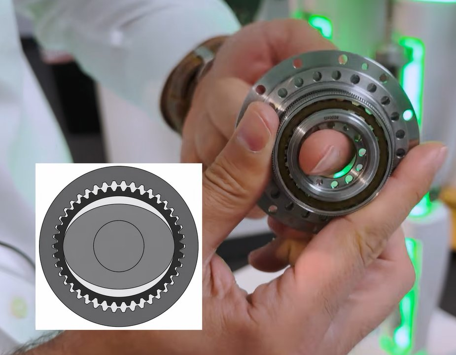
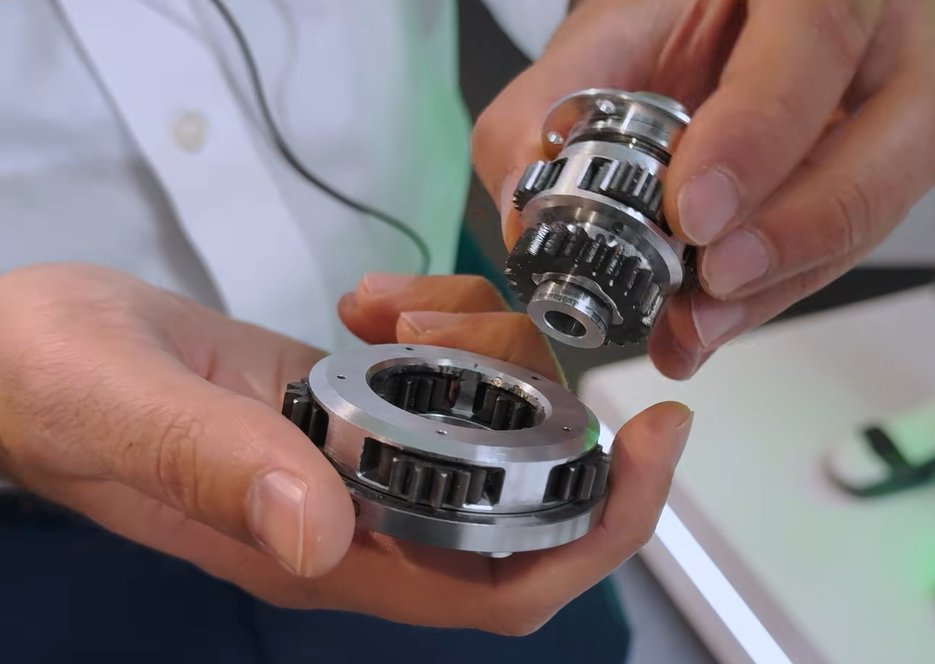
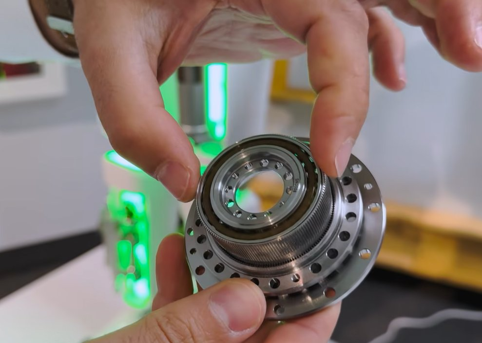
감속비 슬라이더 개념 시연 — "무거운 핸들은 노면 느낌이 죽고, 가벼운 핸들은 노면이 손에 그대로 온다."
Rotary(회전형)는 단순·고효율이지만 팔꿈치·무릎이 두꺼워진다. Linear(선형)는 모터 회전을 스크류로 직선 운동으로 바꿔 모터를 팔·다리 안쪽에 길게 배치, 큰 힘과 자유로운 패키징을 얻는다(Ch.29~30).
사람 손가락엔 근육이 거의 없다. 손가락을 굽히는 근육은 팔뚝(전완)에 있고, 힘줄이 손끝까지 힘을 배달한다. Tesla Gen3·1X NEO는 이 구조를 베꼈다 — 낚시릴 원리로 릴을 감으면 줄이 당겨진다(Ch). Optimus는 전완 하나에 선형 액추에이터 25개(손 23 + 손목 2). "모터는 근육이 아니다": 여전히 모터가 줄을 감는 방식이라 사람 손과 같지 않다.
※ NEO ±0.2mm는 1X NEO 현행 손 반복정밀도, Optimus Gen3 목표 0.08mm(80µm)는 다른 로봇·다른 지표(현행 스펙 vs 목표치)다.
가운데 손잡이를 드래그해 비교 개념 시연
이미지(개념 예시) — 텐덤: Shadow Dexterous Hand · 다이렉트: Schunk SVH 5-finger · 출처 Wikimedia Commons (CC BY-SA). Tesla/1X·Unitree 실제 제품 아님, 구동 방식 대비용.
| 구분 | 텐덤(힘줄) | 다이렉트 |
|---|---|---|
| 구동 원리 | 전완 액추에이터가 케이블/텐던으로 손가락을 원격 구동 | 손가락 안에 소형 모터를 직접 내장 |
| 장점 | 가벼운 손끝·빠른 속도·방수/내구·정밀 파지 공간 | 구조 단순·손가락 독립 제어·수리 시 핑거 단품 교체 |
| 단점 | 전완 열섬·케이블 마찰/cross-talk·조립 난이도·파손 시 팔뚝 통째 교체 | 손이 무겁고 느림·손끝에 열 축적 |
| 주요 기업 | Tesla · Figure · Shadow · 1X | 원익로보틱스 · 로보티즈 · 어질리티 |
출처: 언론 종합
같은 1kg이라도 몸통에 있는 것과 발끝에 있는 것은 관성모멘트가 극심하게 다르다 — 발목에 무거운 모터를 달면 다리를 휘두르는 데 훨씬 큰 토크가 필요하다(Ch.18). G1은 모터를 종아리에 두고 타이 로드 2개로 발목을 구동하는 RSU(Rotary Spherical Universal) 구조를 택했다 — 두 모터가 같은 방향이면 Pitch, 반대면 Roll(Ch.19~20).
G1은 부위별로 3중 냉각을 섞는다: 일반 관절=알루미늄 프레임 전도, 무릎=히트파이프, 엉덩이=원심팬(Ch.9~11). 히트파이프는 노트북 CPU 냉각과 같은 부품 — 액체가 뜨거운 쪽에서 증발→이동→응축하며 열을 나른다. 방열 경로는 모터권선 → 하우징 → TIM → 프레임 → 히트파이프/vapor chamber → 외피·팬. (components 열관리 섹션 ↗)
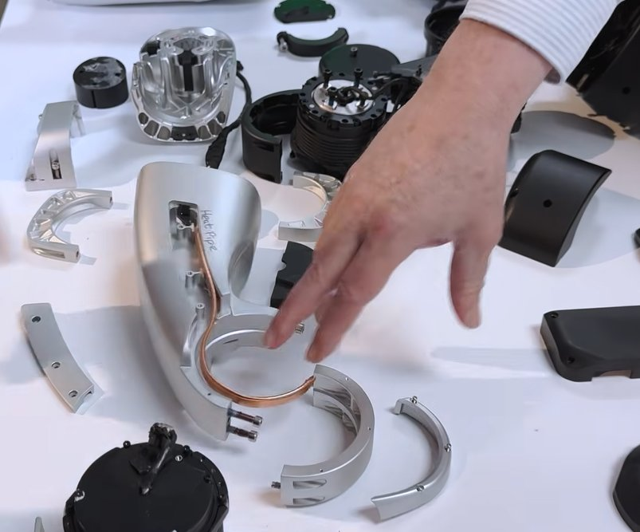
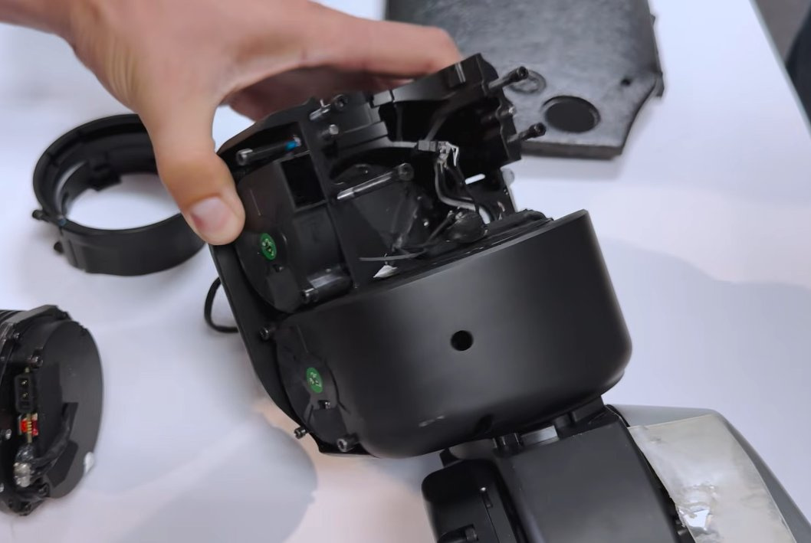
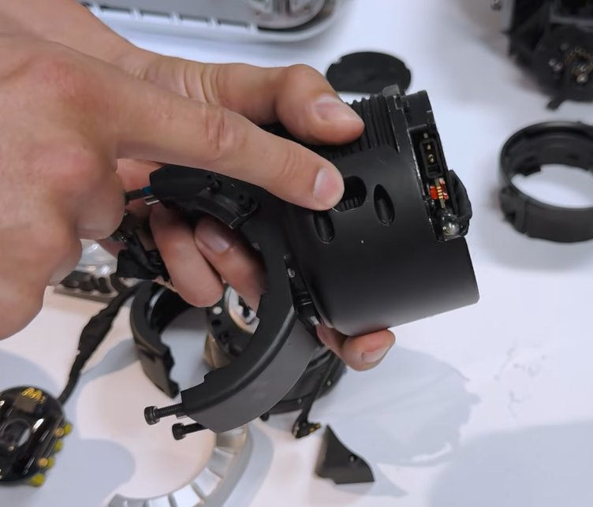
발열 ∝ 전류² — 무거울수록 열은 제곱으로 커진다. 알루미늄 100mm는 2.3µm/°C로 늘어나고, 손끝 정밀도 목표는 80µm다.
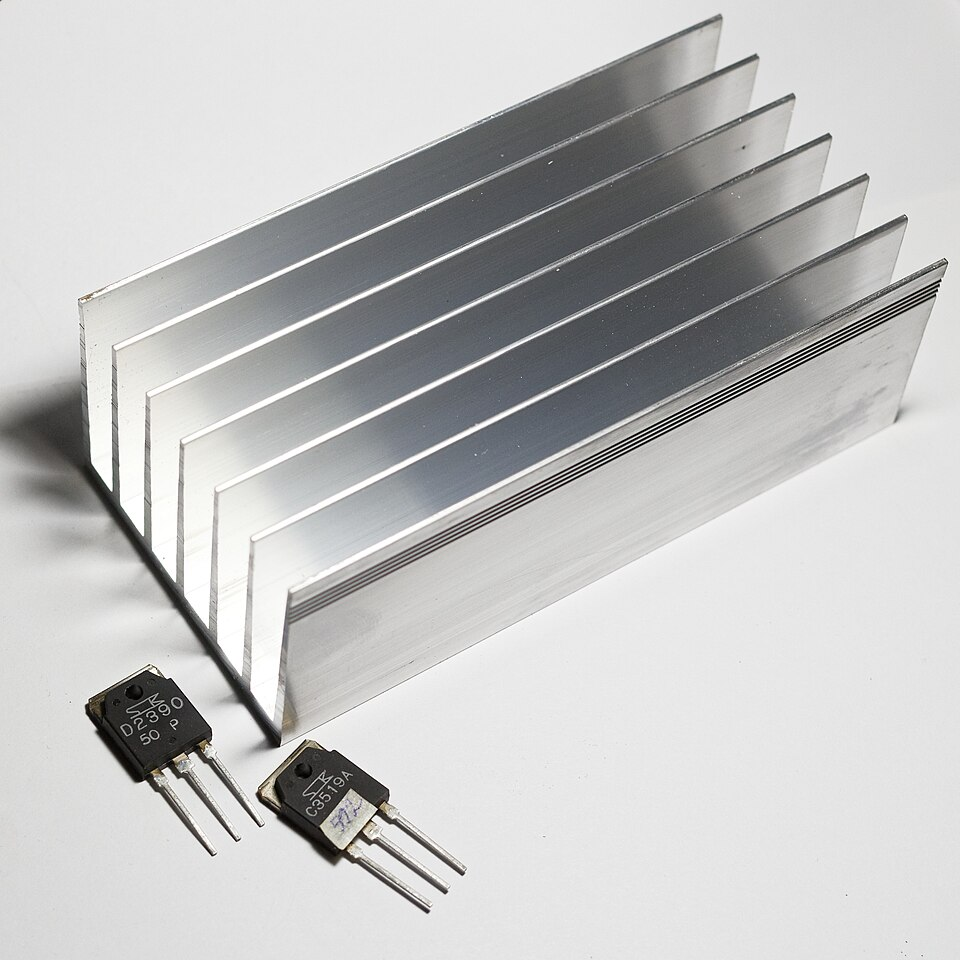
'전기 변환'(칩·배터리 전환장치의 방열·보호 케이스류) — 글로벌 AI사(테슬라)향 1,000억 수주·26.2 양산 개시. 로봇향은 칩은 유사하나 형상 별도 개발 중. 로봇 최대 부품 = 가슴부 800톤급(자동차 전장 최대 2,500톤). 대당 콘텐츠 약 3.3만원 추정. "액추에이터사·캐스팅사가 곧 열관리 부품사"의 한국 증거.
자세히 → KR 밸류체인 ↗모터는 상황에 따라 발전기가 된다 — 어떤 모터는 전력을 쓰고 어떤 모터는 역회전하며 전력을 만든다(회생, Ch.23~24). 모든 모터가 하나의 DC버스를 공유하는데, 소비/생산이 섞여 전압이 48V → 52V → 45V로 출렁인다. 같은 10Nm 명령에도 실제 출력이 달라져 보행이 흔들린다(Ch.25). 커패시터 = 전압 다리미(Ch.26~27). 인버터는 저전압·고전류라 SiC가 아니다.
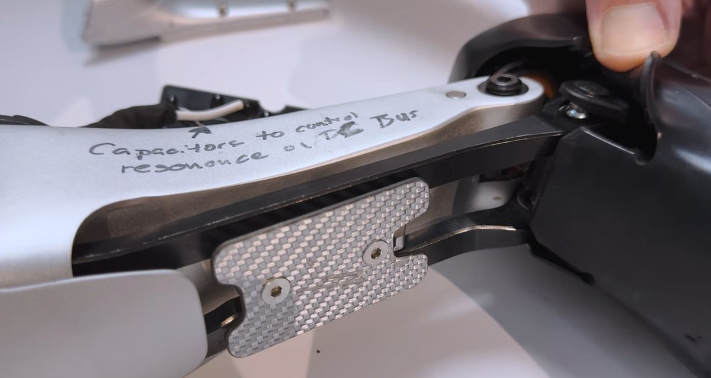
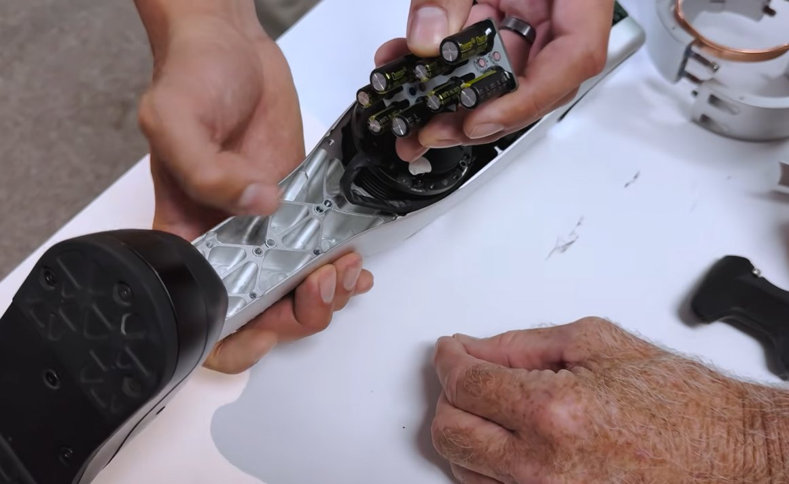
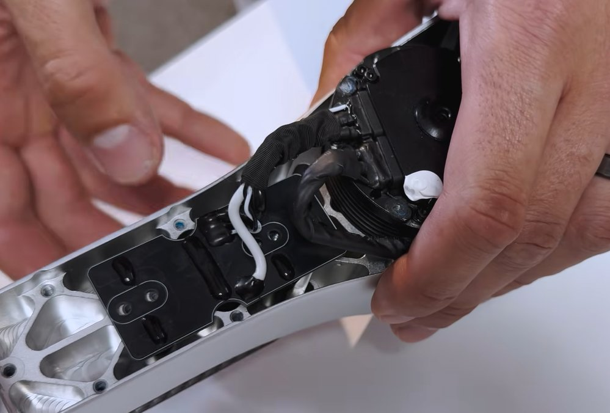
관절마다 4종 세트가 붙는다: 위치(TMR/Hall)·전류·온도·토크. 전류센서는 모터 부하를, 온도센서는 과열 위험을, 위치센서는 정밀 제어를, 토크센서는 접촉 안정성을 담당한다 — 열 인지 제어의 눈이다. 손끝 촉각은 Pressure + Location + Slip 3요소(NEO). 자동차용 MEMS 압력센서(디젤 압력센서용 다이어프램)를 힘 측정에 전용해 연 수백만 개 라인을 그대로 쓴다(Ch.37) — 이것이 VLA(Vision-Language-Action)에 "카메라 밖 물리량"을 먹이는 통로다.
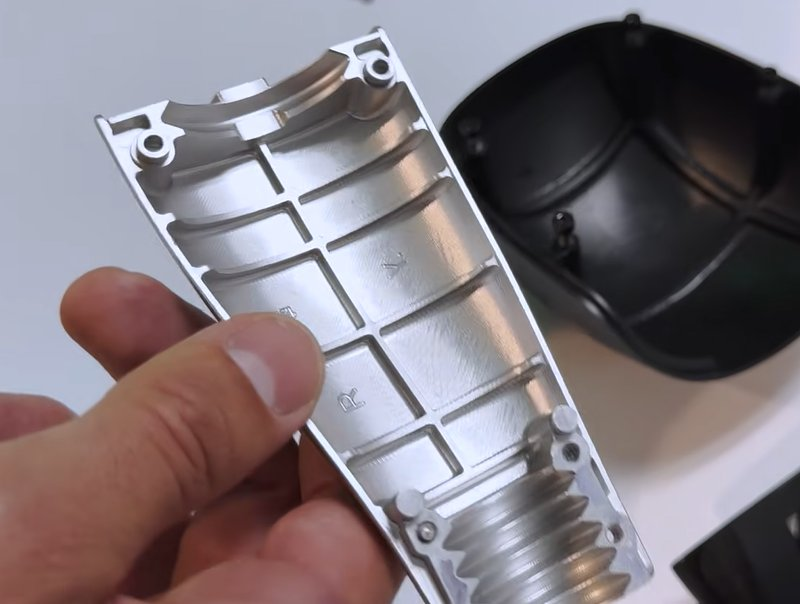
G1은 금형(캐스팅) 대신 Billet을 CNC 통깎이 — CAD 수정 후 다음 날 바로 깎아 설계 반복이 압도적으로 빠르다(Ch.14). 나사 남발도 생산 효율보다 개발 속도(Time-to-Market)의 증거(Ch.16). 액추에이터 개당 $1,000 × 24개 = 자동차 한 대 값 → 자동차식 대량생산으로 $100까지 낮추는 게 관건(Ch.34~35). 부품사는 이제 디지털 트윈을 함께 납품해야 산다(Ch.28).